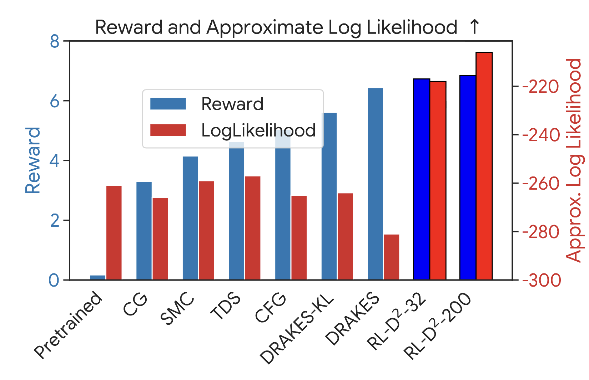
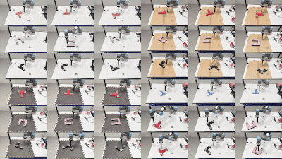
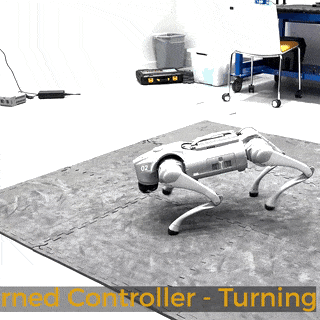
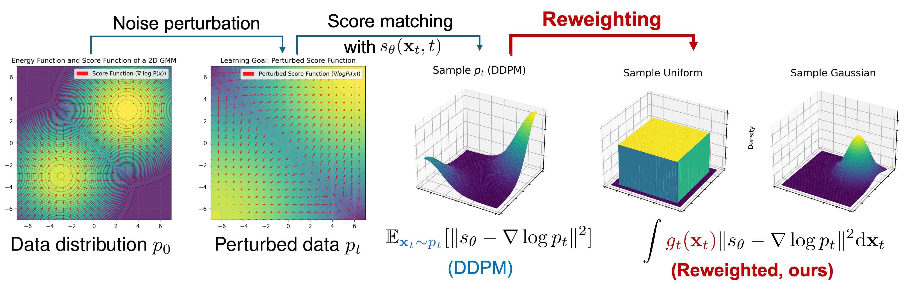
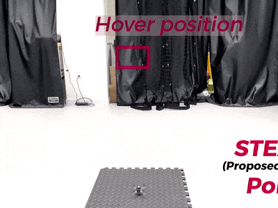

|
I am a fourth-year phd student at Harvard John A. Paulson School of Engineering and Applied Sciences advised by Prof. Na Li. My research interest lies in the intersection of control theory and machine learning, with applications to robotics and generative AI . Currently, I am working on developing advanced decision-making algorithms and systems, such as reinforcement/imitation learning, representation and transfer learning, with applications to robotics, GenAI, and medical applications. Prior to joining Harvard, I received my Master degree and Bachelor degree, both from Tsinghua University, in 2022 and 2019. |
{kind=link}
|
10/2025: My internship project at Google Research on RL with discrete diffusion was published on arxiv. Check it out here! 10/2025: Our new preprints One-step Flow Policy Mirror Descent was published on arxiv. Check it out here! 06/2025: Our paper on Efficient Online Reinforcement Learning for Diffusion Policy has been accepted to ICML 2025! Check it out here! 06/2024: New paper on sim-to-real transfer learning was accepted at IROS 2024 as an oral presentation! Check out the project website for details! 06/2022: One paper was nominated the Best Paper Award Finalists at L4DC 2022. Congratulations to all coauthors! |
|
(* for equal contribution) |
Preprints
|
 |
Reinforcement Learning with Discrete Diffusion Policies for Combinatorial Action Spaces In submission. ArXiv We analyze reinforcement learning(RL) algorithms with discrete diffusion policies for combinatorial action spaces, with applications to DNA generations and long-horizon decision making in Atari games. |
|
One-Step Flow Policy Mirror Descent In submission. ArXiv We leveraged rectified flow and mean flow to simplify and make diffusion policy training more efficient, down to only 1 NFE during policy inference. | |
|
 |
One Policy to Push Them All: Reinforcement Learning with Diffusion Policy for Multi-Task Contact-Rich Manipulation In submission. Project website / Code will be released upon acceptace. We introduce a reinforcement learning (RL) framework to train a single diffusion policy for multiple contact-rich block-pushing tasks, eliminating the reliance on expert data—where conventional RL with unimodal policies fails. |
|
 |
Offline Imitation Learning upon Arbitrary Demonstrations by Pre-Training Dynamics Representations Haitong Ma, Bo Dai, Zhaolin Ren, Yebin Wang, Na Li In submission. online report / Project website / Code will be released upon acceptace.
We pre-train a dynamics representations to improve the imitation learning performance when expert data is very limited. |
Conference Paper
|
 |
Efficient Online Reinforcement Learning for Diffusion Policy Haitong Ma, Tianyi Chen, Kai Wang, Na Li*, Bo Dai* ICML, 2025 ArXiv / Code We train diffusion policies for online RL. We can directly leverage the value function as the energy function to train diffusion policies, avoiding the need of samples from target distribtution. |
|
 |
Skills Transfer and Discovery for Sim-to-Real Learning: A Representation-Based Viewpoint Haitong Ma*, Zhaolin Ren, Bo Dai, Na Li IROS, 2024 (Oral Presentation) arXiv / Project website / Code will be released upon acceptace. We achieve efficient sim-to-real transfer learning from simulator. Check our Project website for details! |

|
Reachability Constrained Reinforcement Learning Dongjie Yu*, Haitong Ma*, Shengbo Eben Li, Jianyu Chen ICML, 2022 (Spotlight) arXiv / Code / Env We use reachability analysis to identify feasible sets and learn optimal safe policies using constrained RL. We can automatically learns the largest forward invariance set, and leverage primal-dual method to learn optimal safe policies. |

|
Joint Synthesis of Safety Certificate and Safe Control Policy Using Constrained Reinforcement Learning Haitong Ma, Chanlgiu Liu, Shengbo Eben Li, Sifa Zheng, Jianyu Chen L4DC, 2022 (Oral Presentation, Best Paper Award Finalists) Also presented at Safe Control and Learning under Uncertainty Workshop, MECC, 2021. arXiv / workshop slides / Pre-recorded Video We use adversarial optimization to jointly learn safety certificates and safe control policies in a purely model-free manner. |
-
Haitong Ma, Tianpeng Zhang, Yixuan Wu, Flavio P. Calmon, Na Li. Gaussian Max-Value Entropy Search for Multi-Agent Bayesian Optimization. IROS 2023.
arxiv / Video -
Haitong Ma, Jianyu Chen, Shengbo Eben Li, Ziyu Lin, Yang Guan, Yangang Ren, Sifa Zheng. Model-based Constrained Reinforcement Learning using Generalized Control Barrier Function. IROS, 2021.
Code -
Yang Guan*, Yangang Ren*, Haitong Ma, Jianyu Chen, Shengbo Eben Li, Qi Sun, Yifan Dai, Bo Cheng. Learn collision-free self-driving skills at urban intersections with model-based reinforcement learning, in IEEE International Intelligent Transportation Systems Conference (ITSC), 2021. (Best Student Paper Award, 2/597)
Paper / Video
Journal Paper
- Tongzheng Ren*, Zhaolin Ren*, Haitong Ma, Na Li, Bo Dai. Stochastic Nonlinear Control via Finite-dimensional Spectral Dynamic Embedding, 2023. IEEE Transactions on Automatic Control (TAC), 2025.
-
Haitong Ma, Chanlgiu Liu, Shengbo Eben Li, Sifa Zheng, Wenchao Sun, Jianyu Chen. Learn Zero-Constraint-Violation Policy in Model-Free Constrained Reinforcement Learning. IEEE Transactions on Neural Networks and Learning Systems (TNNLS), 2023. Paper
-
Yang Guan*, Yangang Ren*, Qi Sun, Shengbo Eben Li, Haitong Ma, Jingliang Duan, Yifan Dai, Bo Cheng. Integrated Decision and Control: Toward Interpretable and Computationally Efficient Driving Intelligence. IEEE Transactions on Cybernetics, 2022.
Paper / Video / Code / Project page
See my Google Scholar page for a full list of my publications.
|
Special credit to Jon Barron for the source code of this website. |